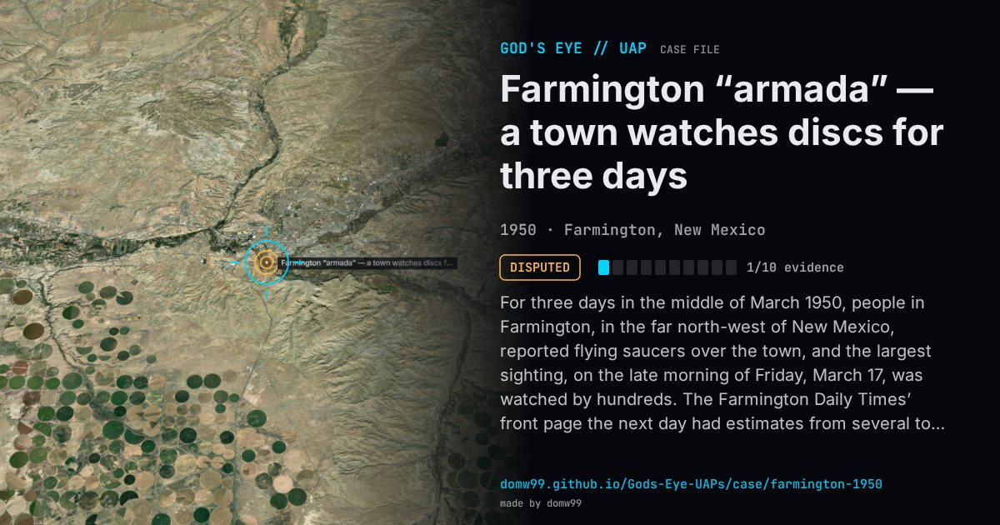

Farmington “armada” — a town watches discs for three days

For three days in the middle of March 1950, people in Farmington, in the far north-west of New Mexico, reported flying saucers over the town, and the largest sighting, on the late morning of Friday, March 17, was watched by hundreds. The Farmington Daily Times’ front page the next day had estimates from several to more than 500 objects; one witness who tried to triangulate one put its speed at about 1,000 mph. When the physicist James McDonald interviewed seven witnesses eighteen years later, the Times business manager Clayton Boddy estimated he had seen 20 to 30 discs, including one much larger red one, and the realtor John Eaton, a former Navy pilot, put them at around 15,000 ft, darting about “like bees” and turning from flat to round as they tilted. No one reported wings or tails. McDonald checked the explanation then current, a Skyhook balloon breaking up, and found no Skyhook had been released; he told a House committee in 1968 that he saw “no ready explanation”. The case remains a mass sighting with no instrument record.
Explanation
The sightings were put down at the time to a Skyhook balloon breaking up, or to drifting cotton-like fluff. James McDonald found that Holloman AFB and the Office of Naval Research, which held the records of every Skyhook release, had none from anywhere in the country on or near that date, that balloon fragments 40,000 to 50,000 ft up would be invisible to the eye, and that the cotton idea came from an offhand remark by a law officer. No Air Force investigation of substance is on record.
What was seen
Shape: Discs, mostly silvery, darting in a “bee-like” swarm; one larger and red
Witnesses: Hundreds of residents over three days, among them the business manager of the Farmington Daily Times and a former Navy pilot
Duration: Mostly late morning, on three consecutive days
Sources
- Farmington Daily Times, March 18, 1950 (transcribed)
- James E. McDonald, statement to the House Symposium on UFOs, July 29, 1968 (transcribed)